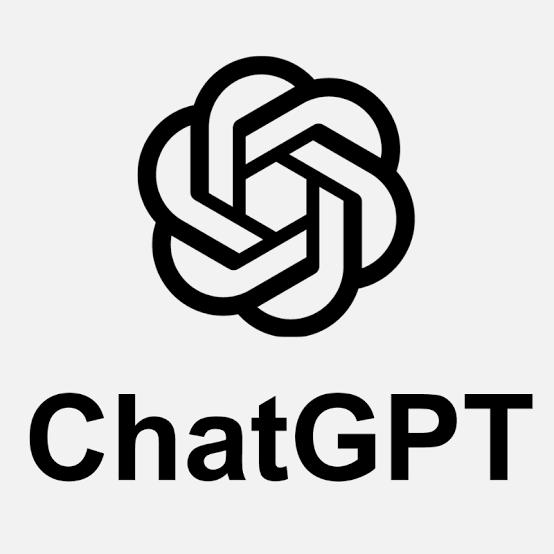

Want in? Contact us to join the next Level 100 cohort — or to talk through a tailored series built around your team's own work.
Why this, and what you leave with
After five sessions you'll understand how to work with a chat tool when you actually need a confident answer on a complicated topic — not a quick one.
You'll leave Level 100 with a foundational paper on something you're genuinely curious about, a narrative that shapes the data into a story, and the diagrams and illustrations to carry it. More than the artifact, you'll have the mindset: fundamentals over tricks, iterate iterate iterate, the judgment and the leadership stay yours — and if it isn't written down, it doesn't exist.
Taught on the tool you already use
Claude is the tool the practice is built around and what this series teaches in the most depth. Class 1 also puts your prompt in front of Gemini, ChatGPT, and Perplexity, so you can see how differently they answer the same question.

The full series
The series is designed to teach you progressively more powerful methods using progressively more complex features of Claude and other tools. Level 200 and above require a Pro subscription to your chosen chat tool. Level 500 and above are for those who plan to use the Bursera Platform and want a methodology that's managed by the platform. All classes are wrapped around whatever subject sparks your curiosity, and are designed to produce concrete research you have confidence in.
Level 200
The project concept as a knowledge center
Requires a Pro subscription to your chat tool.
Level 300
Skills and holding context over time
Requires a Pro subscription to your chat tool.
Level 400
The parts of a personal research platform
Requires a Pro subscription to your chat tool.
Level 500
Introducing the Bursera Platform
For those who plan to use the Bursera Platform.
Level 600
The Bursera Methodology
A methodology managed by the platform.
Level 100 — five classes
Lesson one of five, ending in a quality piece of personal research you have confidence in. The idea to come away with: context matters. Everything we do is in context.
-
Class 1
Context
Location, location, location — for a chat tool, it's context, context, context. Learn what the model actually knows versus what you think it knows, and build the habit of arming it before you ask anything.
-
Class 2
A Solid First Draft
Your profile, your sources, your report design — this is where a draft stops being generic and starts being yours. Tune what Claude already carries about you, catch a thread going stale before it wastes an afternoon, and bring in voices worth citing.
-
Class 3
Analysis
Move from a pile of research to an argument. Carry context forward as the work deepens, structure the analysis so it holds together, and red-team your own conclusions before anyone else has the chance to.
-
Class 4
Refining
The second pass is where research becomes a narrative. Advanced context-carrying, building the story the data actually supports, and a second red-team round — this time on the story, not just the facts.
-
Class 5
Pretty!!!
A good answer deserves to look like one. Turn the research into illustrations, diagrams, and formatting that make the piece as clear to read as it was to build.
Get started